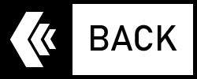

When you dangle your gallon jug, it hurts. The bonus is that you can slice a star-pattern into them when empty and use to carry out all your trash.
Don’t count on streams that are on the map to actually exist. Water is scarce; it’s the goddamn desert! Be prepared for that.
Beer packs well, is hydrating and tastes delicious, even if its warm, especially when you are super thirsty.
The giant Pickles you see in gas stations are gross. Except when its 100 degrees out, you are parched AF and then they are delicious and life saving.
Make sure you have a spider/scorpion/creepy crawly proof shelter. Its warm at night, but those things will get in your sleeping bag and that is not cool.
And as always, go ahead and shoot for the moon. Even when stuff doesn’t turn out how you thought it might, it will turn out some way, and that way will end up being the awesome way in the end.
